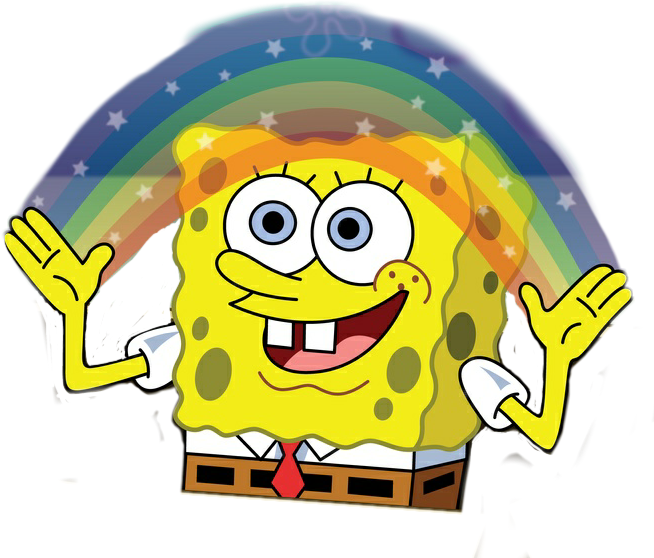
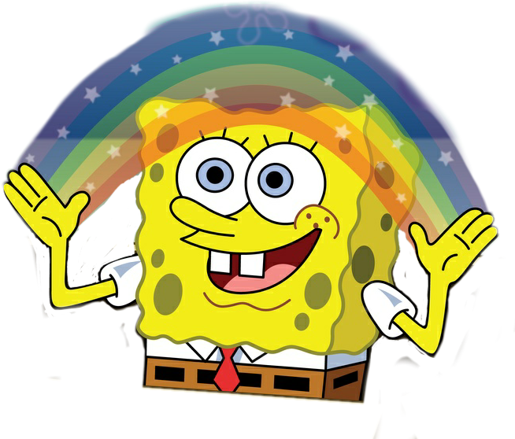

There are three qualities which define the success of memes: longevity, fecundity, and copying-fidelity. Longevity indicates how long a meme can last. Fecundity applies to the appeal of a meme, whether it is catchy and thus likely to spread. Copying-fidelity is about the strength of a meme to withstand mutation in the process of copying and imitation. It determines how much of the original core remains intact when the meme is in transmission. All three criteria also apply to jokes, but the joke was not mentioned by Dawkins as an example of a meme.
Some suggestions in this direction were made, however, by the cognitive scientist Douglas Hofstadter, a friend of Dawkins. Hofstadter was convinced that memes looked a lot like self-referential patterns, which would render them not only survival-minded and selfish—but also fundamentally absurd. An example of such self-referentiality is the Epimenides Paradox. The Cretan thinker Epimenides stated that “All Cretans are liars.” The intricacies of this message, which says, “this statement is false,” were explored by Hofstadter in his seminal book, Gödel, Escher, Bach. Hofstadter brought memes to the attention of the readership of the Scientific American by the early 1980s, right before the idea caught on with the general public. Jeremy Trevelyan Burman reconstructs: “In January of 1983, Hofstadter published an essay that directly discusses his interpretation of the memes proposal. This was inspired, he said, by letters from readers of his previous columns—in particular, letters from Stephen Walton and Donald Going, who suggested that self-referential sentences of the sort discussed in Gödel, Escher, Bach (e.g., ‘This sentence is false’) could be described as being afflicted by a kind of meaning-virus: selfreference parasitizes language, makes it inconsistent with itself, and then encourages thereader (as carrier) to find or construct new instances of meaning-breaking selfreference.”
As Burman notes, “[both] Walton and Going were struck by the perniciousness of such sentences: the selfish way they invade a space of ideas answer manage, merely by making copies of themselves all over the place, to take over a large portion of that space. Why do they not manage to overrun all of the space? It is a good question. The answer should be obvious to students of evolution: the sentences do not do so because of competition from other self-replicators.”
Memes are not phenomena of language; they are phenomena with language. From words which simply “annotate” a meme, conveying its minimally required meaning in a given context, to words which become an integral part of the meme’s functioning. The standard internet meme is an image captioned with heavy type, superimposed on it “for humorous effect” (says Wikipedia). The sentences that are thus part of the image create some kind of strange loop or self-reference; but they also involve tacit knowledge on the part of the viewer. An example is the portrait of the Boromir character from the Lord of the Rings trilogy, captioned with a sentence starting with “One does not simply...” In the original film, the actor Sean Bean says: “One does not simply walk into Mordor. Its black gates are guarded by more than just orks.” The “One does not simply...” meme has this sentence completed in different ways: One does not simply grow his dick six inches in three easy steps. One does not simply topple a Ugandan warlord by pressing “like” on Facebook. One does not simply log out of a friend’s Facebook without making him gay.
A fictional, but widely known, point of reference is tinkered with to create new implications, to the point that one no longer thinks of Tolkien and Peter Jackson at all. But the remainder of that commonly held reference point, the tacit knowledge which is that I know that you know that I know that particular part of The Lord of the Rings enables the joke, any joke, that follows. If, for instance, the same sentence would be based on a film that no one has ever seen, its mention would never achieve the same immediate impact. A mem can tap into a collective memory and transform the “outcome” of a commonly held starting point to different ends.
Further study into the nature of self-referentiality was done by Susan Stewart in her legendary book, Nonsense. For Stewart, the category of “nonsense” is opposed to the category of “common sense making” through which what we think of as reality is established. By categorising something as “nonsense”, “the legitimacy and rationality of sense making was left uncontaminated, unthreatened. It is not difficult to see a fundamental political procedure at work here. Isn’t it exactly the day job of most politicians to manage reality and sense-making, deciding what others get to see as nonsense and what as legit? One is tempted to think here of Labour leader Ed Miliband’s June, 2011 condemnation of nationwide strikes in the UK. In a BBC interview, Miliband gave the same answer to each different question posed to him by the journalist. “These strikes are wrong … both sides should put aside the rhetoric and get around the negotiating table …” Time and again, Miliband hammered out the same words. His drone-like repetition of a single, studied phrase laid bare a structural protocol of governance, an inability to deviate from a script—even more preposterous when you think that Miliband is supposed to lead the opposition rather than govern the country. “Milibot,” as the curious speech exercise became known, is an example of what Mark Fisher subsequently labelled “reality management.” It showed the impossibility of conducting “opposition” within the governing neoliberal frame, and the desperation of a politician trying to stan [sic] inside of it. Indeed, argued Stewart, “all discourse bears reference to a commonly held world. The discourse of common sense refers to the ‘real world.’ The discourse of nonsense refers to ‘nothing.’ In other words, it refers to itself, even though it must manufacture this ‘nothing’ out of a system of differences from everyday world—the common stuff of social life—in order to be recognised as ‘nothing.’”
Nonsense also involves an element of “play.” Boromir’s “One does not simply…” bounces off from a widely known, and also slightly ridiculous phrase, and then it goes on to take completely different directions with it. Stewart notes that “Playing at fighting may not be “not fighting,” but it is not fighting on a different level of abstraction from other kinds of not fighting such as kissing, skipping rope, buying groceries, or singing “Happy Birthday.” Play involves the manipulation of the conditions and contexts of messages and not simply a manipulation of the message itself. It is not, therefore, a shift within the domain of the everyday lifeworld: it is a shift to another domain of reality.”Memes take on a wide variety of forms and formats, but they do their work right in the human brain. Time, explained Dawkins, constitutes a major limit on the success of individual memes. No one person can do more than only a few things at once .Consequently, said Richard Dawkins, “if a meme is to dominate the attention of the human brain, it must do so at the expense of ‘rival’ memes.” Digital networks and social media do not dissolve the limits in attention that the human brain can give to any meme, but they do more or less solve two out of three criteria that, according to Dawkins, determine a mem’s success: longevity and copyingfidelity.
 
